Demo Plugin
Links
Source: https://github.com/twocanplugin/demo [Github Repository]
Releases: https://github.com/TwoCanPlugIn/Demo/tags [Github Releases]
Forum: Cruisers Forum Thread
1. Aim
This demo plugin demonstrates the use of many of the OpenCPN plugin API’s and should accelerate the development of new plugins. It uses a superset of the API’s used in the OpenCPN built-in demo plugin but more importantly is built using the same process that are used for third party plugins (ie. those installed using the plugin manager).
It is based the "ShipDriver" template which is one of the two templates that are used to automate the Github, CircleCI and Cloudsmith processes. However the plugin can also be built and installed locally which greatly eases the task of programming, testing and debugging.
It is not meant to demonstrate the best C/C++ coding practices, explain the intricacies of wxWidgets; the cross platform library used by OpenCPN, educate developers on how to use github, CircleCI and Cloudsmith nor describe the installation of the prerequisites (compiler, cmake, wxWidgets etc.)
Each of the following chapters are git commits/tags. Each chapter introduces a new scenario using a different set of API’s and should be independent of one another. That means you "should" be able to git cherry pick different commits/tags to add specific features to the plugin.
2. Install
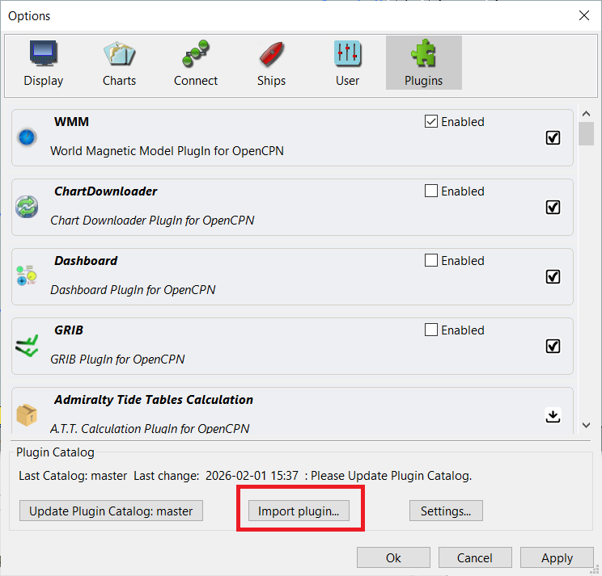
Download the plugin tarball from the repository or if built locally, it will be present in the build directory. Install using the plugin manager. Tools→Plugins→Import plugin.
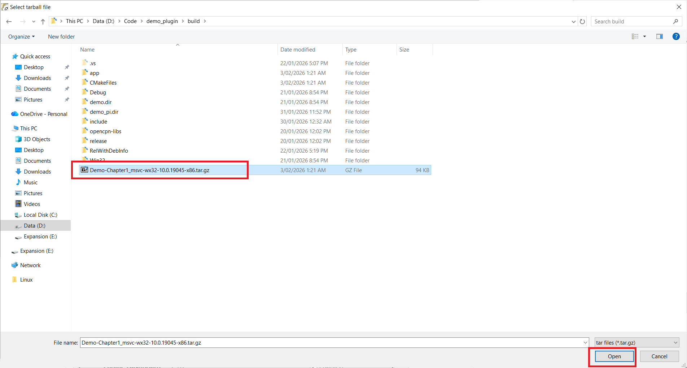
The plugin manager displays a dialog indicating the plugin has been successfully installed.
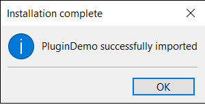
3. Enabling
Enable the plugin using Tools→Plugins, find the Demo Plugin entry and tick the checkbox.
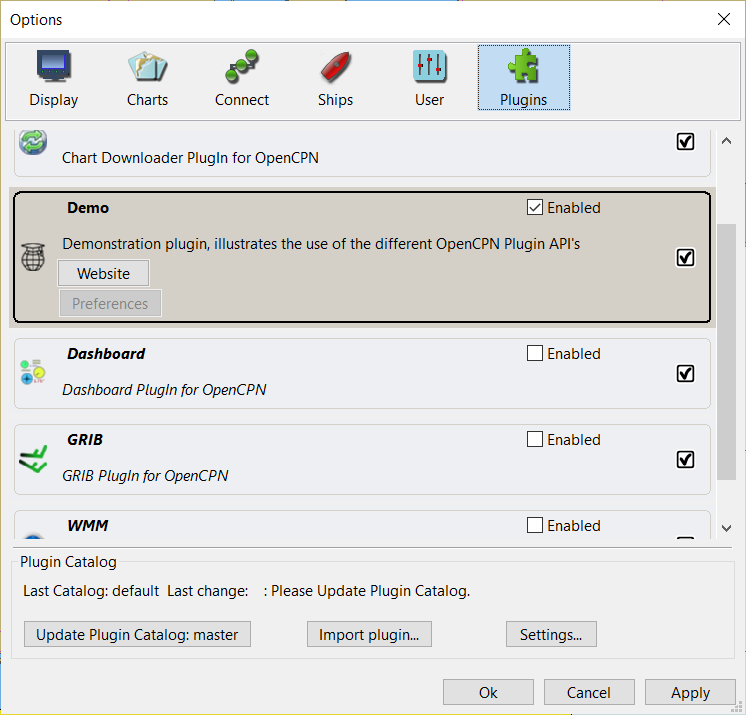
4. Using the OpenCPN Plugin API’s
Chapter 1. Basic plugin, Mandatory API’s, Logging, Plugin Folders
This is a basic plugin, that demonstrates the mandatory API’s that a plugin MUST support.
Note that the class that implements the plugin, derives from an OpenCPN plugin base class. Over successive versions of OpenCPN new functions and members have been added to the base classes. The plugin need only inherit from a base class that provides the API’s required for the plugin’s desired capabilites.
For example, a plugin that is derived from the OpenCPN Plugin API version 1.17 base class uses the following constructor.
DemoPlugin::DemoPlugin(void* ppimgr) : opencpn_plugin_117(ppimgr)The mandatory API’s that all plugins must implement
These two API’s indicate what version of the OpenCPN API’s are supported
GetAPIVersionMajor()
GetAPIVersionMinor()Eg. if the plugin is derived from OpenCPN Plugin API 1.17, the major version number is 1 and the minor version number is 17
These three API’s indicate the version number of the plugin
GetPlugInVersionMajor()
GetPlugInVersionMinor()
GetPlugInVersionPatch()Eg. If the plugin version is 1.2.3, the major version is 1, the minor version is 2 and the patch version is 3.
This returns the name of the plugin and is displayed in the Plugin Manager
GetCommonName()The following two API’s return a long and short description, both of which are displayed in the Plugin Manager
GetShortDescription()
GetLongDescription()This API returns the icon for the plugin which is displayed in the Plugin Manager. It should be a 32 x 32 pixel bitmap.
GetPlugInBitmap()In addition the plugin dumps some of the OpenCPN standard folder paths and user’s measurement units into the OpenCPN log file using wxLogMessage. This OpenCPN log is the preferred mechanism for plugins to log messages. Eg.
wxLogMessage("Demo Plugin, Speed Units: %s", getUsrSpeedUnit_Plugin());To log important error messages, you can also us wxLogError.
In addition the plugin dumps some of the OpenCPN standard folder paths and user’s measurement units into the OpenCPN log file using wxLogMessage. This OpenCPN log is the preferred mechanism for plugins to log messages. To log important error messages, you can also use wxLogError.
Chapter 2. Configuration (Default Settings)
OpenCPN and plugins persist configuration settings using the wxWidgets file based configuration class. This allows settings to be persisted in a standard ini file format.
Settings can saved using code similar to:
wxFileConfig* configSettings = GetOCPNConfigObject();
if (configSettings) {
configSettings->SetPath("/PlugIns/DemoPlugin");
configSettings->Write("A_Boolean_Value", g_someBooleanValue);
configSettings->Write("An_Integer_Value", g_someIntegerValue);
configSettings->Write("A_String_Value", g_someStringValue);
}Upon plugin installation and enabling, an OpenCPN Callback API SetDefaults can be implemented to allow the plugin to perform its initial configuration. In this example, a wxWizard dialog is displayed to allow the users to configure the plugin’s settings. However developers are free to implement any UI they wish, or in fact not display any UI, rather just adopt some default values.
void DemoPlugin::SetDefaults(void) {
auto installationWizard = std::make_unique<DemoWizard>(GetOCPNCanvasWindow());
if (installationWizard->RunWizard(installationWizard->m_pages.at(0))) {
SaveSettings();
}
}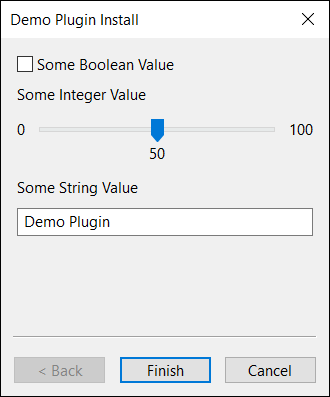
Chapter 3. Settings/Preferences
There are two mechanisms that may be used to display an interface to allow users to configure the plugin. The first mechanism adds a notebook page to any of the notebook tabs (Display, Charts, Ship, User) in the OpenCPN Toolbox. This requires the INSTALL_TOOLBOX_PAGE value to be returned in the Init function and the OnSetupOptions function to be overridden
void DemoPlugin::OnSetupOptions(void) {
auto toolBoxWindow = AddOptionsPage(OptionsParentPI::PI_OPTIONS_PARENT_UI, _("Demo Settings"));
auto toolboxSizer = new wxBoxSizer(wxVERTICAL);
toolBoxWindow->SetSizer(toolboxSizer);
auto demoToolbox = new DemoToolbox(toolBoxWindow);
toolboxSizer->Add(demoToolbox, 1, wxALL | wxEXPAND);
}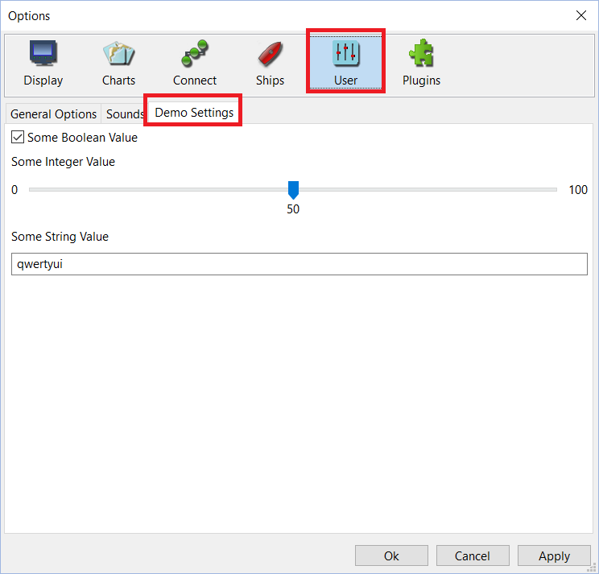
The second mechanism is for the plugin to provide its own dialog which is displayed from the plugin’s preference option. This requires the WANTS_PREFERENCES value to be returned in the Init function and the ShowPreferencesDialog function to be overridden.
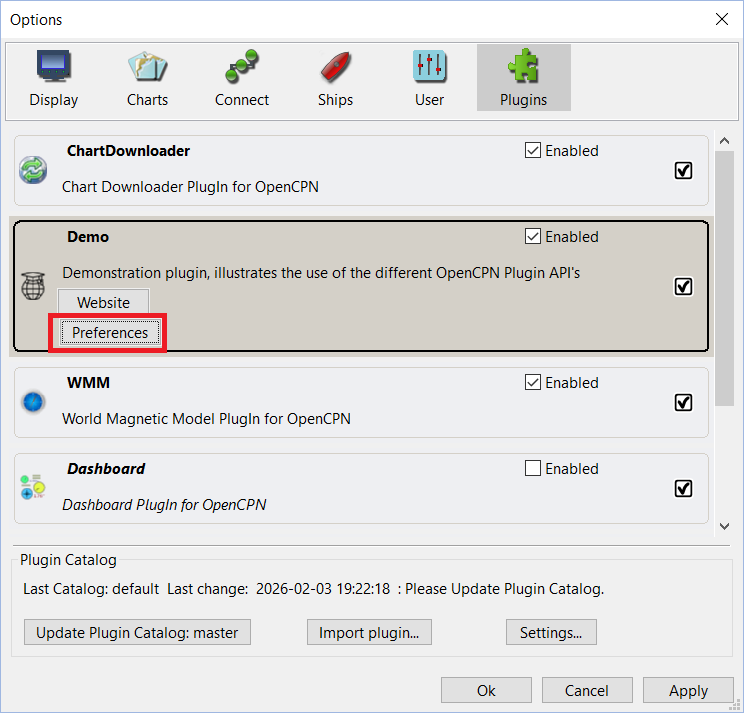
void DemoPlugin::ShowPreferencesDialog(wxWindow* parent) {
auto demoSettings = std::make_unique<DemoSettings>(parent, wxID_ANY, _("Demo Preferences"));
if (wxID_OK == demoSettings->ShowModal()) {
SaveSettings();
}
}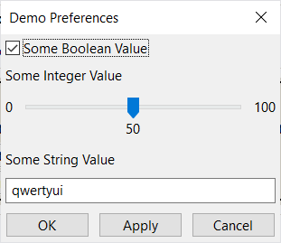
Chapter 4. Context Menus
One method that a plugin may solicit input from a user is via context menu items. The plugin may add its own context menu items to the root context menu which will be displayed when the user right clicks on the OpenCPN Canvas.
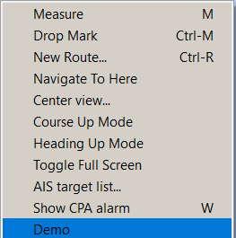
Context Menu items are added using code similar to:
auto demoContextMenu = new wxMenuItem(NULL, wxID_HIGHEST + 1, "Demo", "Demo Plugin Menu", wxITEM_NORMAL, NULL);
demoContextMenuId = AddCanvasContextMenuItem(demoContextMenu, this);When the context menu item is selected, the plugin handles the callback, checking that the context menu item id matches and performs whatever functions the plugin requires. In this example just a message box is displayed.
void DemoPlugin::OnContextMenuItemCallback(int id) {
if (id == demoContextMenuId) {
wxMessageBox(wxString::Format("Demo Context Menu Selected, Menu Id: %d", id), "Demo Plugin");
}
}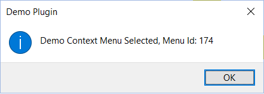
Context Menu Items may also be added to the Sub Menus for AIS, Routes, Waypoints and Tracks. This is only supported when using OpenCPN API level 1.20 or higher. An example of adding a context menu item to the AIS sub menu is shown below.
auto dscMenu = new wxMenuItem(NULL, wxID_HIGHEST + 2, "AIS Demo", "Demo Plugin AIS Sub Menu", wxITEM_NORMAL, NULL);
demoAISContextMenuId = AddCanvasContextMenuItemExt(dscMenu, this, "AIS");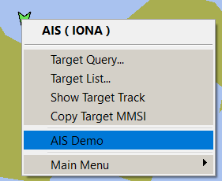
Again plugins may perform any function that is required, in this case just displaying a message box with some details about the selected AIS target. Also note that some OpenCPN helper API’s are used to format the latitude and longitude which are stored internally by OpenCPN as doubles, into human readable strings.
void DemoPlugin::OnContextMenuItemCallbackExt(int id, std::string obj_ident, std::string obj_type, double lat, double lon) {
if (id == demoAISContextMenuId) {
wxMessageBox(wxString::Format("Object Id: %d\nObject Identifier (MMSI): %s\nObject Type: %s\nLatitude: %s\nLongitude: %s",
id, obj_ident.c_str(), obj_type.c_str(), toSDMM_PlugIn(1, lat, true),
toSDMM_PlugIn(2, lon, true)), "AIS Target Information",
wxOK | wxICON_INFORMATION);
}
}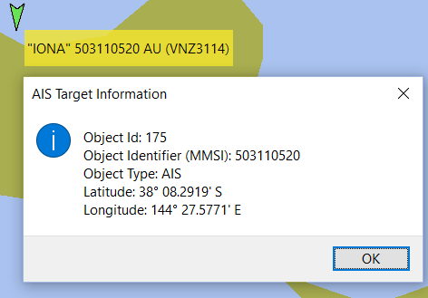
Chapter 5. Toolbar
Plugins may install a toolbar button to allow different tasks to be performed. Firstly create your toolbar button icons as Scaled Vector Graphics (.SVG) files. Create three icons to represent the normal (untoggled) state, toggled state and rollover state (although for some reason OpenCPN does not process a rollover event).
The following code is used to create the toolbar button:
demoToolbarId = InsertPlugInToolSVG("Demo", normalIcon,
rolloverIcon, toggledIcon, wxITEM_CHECK, "Demo", "Demo Plugin Toolbar Description", NULL, -1, 0, this);Note to also add the value INSTALLS_TOOLBAR_BUTTON to the return value of the Init function The toolbar button will then be displayed.
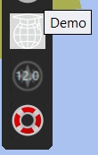
To handle the toolbar button press, code similar to the following is invoked by the callback.
void DemoPlugin::OnToolbarToolCallback(int id) {
if (id == demoToolbarId) {
isToolbarActive = !isToolbarActive;
SetToolbarItemState(id, isToolbarActive);
wxMessageBox(wxString::Format("Demo Toolbar invoked, Id: %d", id), "Demo Plugin");
isToolbarActive = !isToolbarActive;
SetToolbarItemState(id, isToolbarActive);
}
}In this example the plugin only displays a message box. Note that the state of the button is toggled while the message box is displayed using the SetToolbarItemState function.
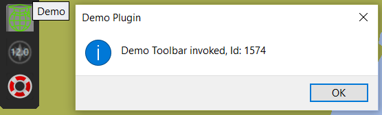
Chapter 6. Navigation Data
OpenCPN provides plugins with navigation data; Speed Over Ground (SOG), Course Over Ground (COG), Heading (True and Magnetic), Latitude and Longitude once per second.
There are two mechanisms for receiving this data.
-
The "old" mechanism uses callback API’s SetPositionFix (excludes heading) or SetPositionFixEx which the plugin registers during the Init function by returning the value WANTS_NMEA_EVENTS. Plugins then override SetPositionFix or SetPositionFixEx as appropriate.
void DemoPlugin::SetPositionFixEx(PlugIn_Position_Fix_Ex& pfix) {
// Persist our current position and heading.
currentLatitude = pfix.Lat;
currentLongitude = pfix.Lon;
trueHeading = pfix.Hdt;
}-
The "new" method uses the observer listener model which was introduced with OpenCPN 5.10. While the older model using callback API’s can be used for Navigation Data, NMEA 0183 and internal Messaging, this new model is the only method by which plugins can receive NMEA 2000 data in addition to Navigation Data, NMEA 0183, SignalK and Messaging. In general this model is preferred over using callback API’s.
Plugins register their subscribers during initialization and implement an appropriate handler.
// Register handler for OpenCPN Navigation Data observer/listener events
wxDEFINE_EVENT(EVT_NAV_DATA, ObservedEvt);
listener_nav = std::move(GetListener(NavDataId(), EVT_NAV_DATA, this));
Bind(EVT_NAV_DATA, [&](ObservedEvt ev) {
HandleNavData(ev);
});Remember to ensure the plugin class inherits from the wxWidgets wxEvtHandler class.
When the handler is invoked, plugins retrieve the event payload and parse as appropriate.
// Handler for Navigation Data events
void DemoPlugin::HandleNavData(ObservedEvt ev) {
// Persist our current position and heading
PluginNavdata navdata = GetEventNavdata(ev);
currentLatitude = navdata.lat;
currentLongitude = navdata.lon;
trueHeading = navdata.hdt;
}Chapter 7. NMEA 0183
Receiving NMEA 0183
There are two mechanisms for a plugin to receive NMEA 0183 data from OpenCPN.
-
The "old" method using the callback API SetNMEASentence. This is the original method initially implemented by OpenCPN. Plugins register the callback function by including WANTS_NMEA_SENTENCES with the return value of the Init function. Plugins then implement the SetNMEASentence function and will then receive ALL NMEA0183 sentences received by OpenCPN.
Plugins then process all received sentences and act on those sentences that are of interest.
In the demo plugin, the following code implements the callback API used to receive NMEA 0183 sentences.
void DemoPlugin::SetNMEASentence(wxString& sentence) {
...
}One the plugin has received the NMEA sentence, it may process the sentence using any method. The OpenCPN support libraries include a set of NMEA 0183 libraries.
These can be added to the plugin by including them with the CMAKE scripts; if using the Shipdriver template in Plugin.cmake or if using the Testplugin template, in CMakelists.txt
add_subdirectory(opencpn-libs/nmea0183)
target_link_libraries(${PACKAGE_NAME} ocpn::nmea0183)The following code snippet demonstrates usage of the bundled NMEA 0183 library, in this case parsing the NMEA 0183 MWV (Wind transducer) sentence, for example $WIMWV,190.0,R,11.4,K,A*1A
void DemoPlugin::SetNMEASentence(wxString& sentence) {
NMEA0183 parserNMEA0183;
parserNMEA0183 << sentence;
// This checks that the sentence is valid (has a talker id, mnemonic & valid checksum)
if (parserNMEA0183.PreParse()) {
if (parserNMEA0183.LastSentenceIDReceived == "MWV") {
if (parserNMEA0183.Parse()) {
if (parserNMEA0183.Mwv.Reference == "R") {
// Relative Wind Angle
double apparentWindAngle = parserNMEA0183.Mwv.WindAngle;
if (parserNMEA0183.Mwv.WindSpeedUnits == "N") {
// Wind Speed in Knots
double apparentWindSpeed = parserNMEA0183.Mwv.WindSpeed;
}
}
}
}
}
}This same library can be used with either the "old" callback API SetNMEASentence or the "new" API using the observer listener model described below.
-
The "new" method uses the observer listener model introduced with OpenCPN 5.10.
This model may be more efficient for receiving NMEA 0183 data as plugins register to receive only the sentences that are of interest.
Just for the sake of demonstration purposes, OpenCPN also provides a "Late" or "Delayed" initialization callback for plugins. Generally most of OpenCPN’s core services have been started by the time a plugin is loaded, however there may be occasions when not all services have been started when the plugin has been loaded. In this example, we will use the LateInit callback function to register the event handler. This "Late" Init requires the WANTS_LATE_INIT value to be included in the return value for the Init fnction. Plugins then implement the LateInit callback API.
void DemoPlugin::LateInit() {
wxDEFINE_EVENT(EVT_183_VHW, ObservedEvt);
NMEA0183Id id_vhw = NMEA0183Id("VHW");
listener_vhw = std::move(GetListener(id_vhw, EVT_183_VHW, this));
Bind(EVT_183_VHW, [&](ObservedEvt ev) {
HandleVHW(ev);
});
}Plugins then implement the handler for the specific event.
void DemoPlugin::HandleVHW(ObservedEvt ev) {
NMEA0183Id id_183_vhw("VHW");
wxString sentence = GetN0183Payload(id_183_vhw, ev);You may then parse the received sentence using the NMEA 0183 libraries as described previously.
Transmitting NMEA 0183
There are two mechanisms for a plugin to send NMEA 0183 data to OpenCPN.
-
The "old" method using the Plugin API PushNMEABuffer.
This is the original method initially implemented by OpenCPN. NMEA 0183 sentences generated by a plugin and transmitted to core OpenCPN are both consumed by core OpenCPN and also transitted to any outbound NMEA 0183 connection.
All plugins need to do is generate a valid NMEA 0183 sentence including the sentence delimiter ('$' or '!' character), talker id, mnenomic, checksum delimiter ('*' character) and checksum.
The bundled OpenCPN NMEA 0183 libaries can be used to generate valid sentences, for example:
wxString DemoPlugin::FormatTrueWindSentence(void) {
NMEA0183 NMEA0183parser;
SENTENCE NMEASentence;
NMEA0183parser.TalkerID = "II";
NMEA0183parser.Mwv.Empty();
NMEA0183parser.Mwv.WindAngle = trueWindAngle;
NMEA0183parser.Mwv.Reference = "T";
NMEA0183parser.Mwv.WindSpeed = trueWindSpeed;
NMEA0183parser.Mwv.WindSpeedUnits = "N";
NMEA0183parser.Mwv.IsDataValid = NTrue;
NMEA0183parser.Mwv.Write(NMEASentence);
return NMEASentence.Sentence;
}The NMEA 0183 sentence can then transmitted using the PushNMEABuffer API, eg.
wxString data = FormatTrueWindSentence();
PushNMEABuffer(data);You can verify the generation of NMEA 0183 using the Data Monitor.
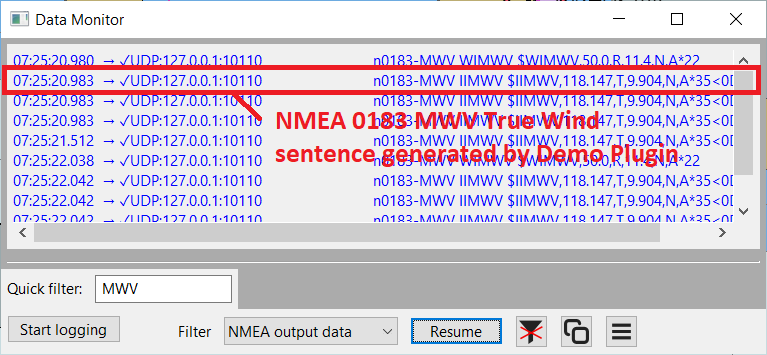
-
The "new" method uses the Observer/Listener model. Plugins need to obtain a "handle" to an OpenCPN connection. All connections, irrespective of interface (serial/usb, udp, tcp), protocol (NMEA 0183, NMEA 2000, SignalK) and direction (in, out, in/out) expose a driver handle.
Each connection’s properties are stored in an unordered map of string key/value pairs, for example: protocol, nmea0183 ioDirection, OUT
The connections are stored in a vector of the unordered maps. The API GetActiveDrivers returns the vector containing all of the drivers. Each driver is then used as the argument to the GetAttributes API to retrieve the unordered map.
For example to find an outbound nmea0183 interface:
std::string FindNMEA0183Interface() {
for (const auto& driver : GetActiveDrivers()) {
const auto& attributes = GetAttributes(driver);
auto protocolIterator = attributes.find("protocol");
auto directionIterator = attributes.find("ioDirection");
if (protocolIterator != attributes.end() && directionIterator != attributes.end()) {
// Find a connection matching the required connection and io direction
if ((protocolIterator->second == "nmea0183") && ((directionIterator->second == "OUT") ||
(directionIterator->second == "IN/OUT"))) {
return driver;
}
}
}
return {};
}The plugin then uses the returned handle when writing to the interface using the WriteCommDriver API. (Note, that although the handle is a string value, the handle is meant to be opaque)
std::string sentence = "$GPGLL,3825.70,S,14433.31,E ,150531.70.00,A,A*76";
std::vector<uint8_t> payload(sentence.begin(), sentence.end());
auto sharedPointer = std::make_shared<std::vector<uint8_t> >(std::move(payload));
CommDriverResult result = WriteCommDriver(networkHandle, sharedPointer);
if (result != RESULT_COMM_NO_ERROR) {
wxLogMessage("Demo Plugin, Error sending NMEA 0183 Sentence: %d", result);
}Chapter 8. NMEA 2000
Receiving NMEA 2000
NMEA 2000 support for OpenCPN was only recently introduced and required a new connection mechansm which resuted in the Observer/Listener model that is now also used for NMEA 0183, SignalK and Messaging.
Similar to described above, Plugins register for the NMEA 2000 Parameeter Group Numbers (PGN’s) that are of interest. For example the following snippet registers the plugin to receive PGN 130306 which encodes Wind Speed and Direction
// Register subscriber for PGN 130306 Wind
wxDEFINE_EVENT(EVT_N2K_130306, ObservedEvt);
NMEA2000Id id_130306 = NMEA2000Id(130306);
listener_130306 = std::move(GetListener(id_130306, EVT_N2K_130306, this));
Bind(EVT_N2K_130306, [&](ObservedEvt ev) {
HandleN2K_130306(ev);
});Again, plugins implement the handler to receive and parse the NMEA 2000 data. Unlike NMEA 0183 where the sentences are ASCII text, NMEA 2000 uses a binary format and some bit twiddling is required to parse the data. OpenCPN bundles NMEA 2000 libraries, that parse most of the standard PGN’s. These libraries are derived from Timo Lappalainen’s libraries (https://github.com/ttlappalainen). For proprietary PGN’s (for example used by commercial vendors for configuration, autopilots, media players etc.) you will need to implement your own parsers.
// Parse NMEA 2000 PGN 128269 message (Boat Speed)
void DemoPlugin::HandleN2K_128259(ObservedEvt ev) {
NMEA2000Id id_128259(128259);
std::vector<uint8_t> payload = GetN2000Payload(id_128259, ev);
unsigned char sequenceId;
double boatSpeedWaterReferenced;
double boatSpeedGroundReferenced;
tN2kSpeedWaterReferenceType waterReferenceType;
if (ParseN2kPGN128259(payload, sequenceId, boatSpeedWaterReferenced, boatSpeedGroundReferenced, waterReferenceType)) {
// Convert from NMEA 2000 SI units which are m/s to OpenCPN's core units
boatSpeed = fromUsrSpeed_Plugin(boatSpeedWaterReferenced, 3);
}
}Note that the payload as returned from GetN2000Payload is not simply the NMEA 2000 message, but is encapsulated as an Actisense NGT-1 frame. If you are parsing the payload using your own library, you will need to "unpack" this format yourself. A text representation of the binary payload, once the Data Link Escape (DLE), Start of Transmission (STX) and End of Transmission (ETX) delimiters have been removed is:
93 13 02 01 F8 01 FF 01 76 C2 52 00 08 08 70 EB 14 E8 8E 52 D2 BB 10
This decodes as:
command |
1 byte |
0x93 |
Value = 0x93 indicates NGT-1 format |
length |
1 byte |
0x13 |
Length of frame excluding command, length and CRC |
priority |
1 byte |
0x02 |
NMEA 2000 priorty |
PGN |
3 bytes |
0x01 0xF8 0x01 |
Decodes to PGN 129025 |
destination |
1 byte |
0xFF |
Destination Address (NMEA 2000 Broadcast Address) |
source |
1 byte |
0x01 |
Source Address |
timestamp |
4 bytes |
0x76 0xC2 0x52 0x00 |
Time in milliseconds |
data length |
1 byte |
0x08 |
Actual NMEA 2000 payload length |
data |
data length |
0x08 0x70 0xEB 0x14 0xE8 0x8E 0x52 0xD2 |
NMEA 2000 data |
checksum |
1 byte |
0xBB |
Ensures sum of characters % 256 equals 0 |
Transmitting NMEA 2000
Similar to the "new" method for transmitting NMEA 0183, the first thing that is required to transmit NMEA 2000 is to obtain a handle to an appropriate connection.
std::string FindNMEA2000Interface() {
for (const auto& driver : GetActiveDrivers()) {
const auto& attributes = GetAttributes(driver);
auto protocolIterator = attributes.find("protocol");
auto directionIterator = attributes.find("ioDirection");
if (protocolIterator != attributes.end() && directionIterator != attributes.end()) {
// Find a connection matching the required connection and io direction
if ((protocolIterator->second == "nmea2000") && ((directionIterator->second == "OUT") ||
(directionIterator->second == "IN/OUT"))) {
return driver;
}
}
}
return {};
}In addition, because the Actisense NGT-1 adapter requires a "list" of transmitted PGN’s, OpenCPN needs to send an appropriate command to the adapter. As OpenCPN does not provide a mechanism to inform plugins what NMEA 2000 adapters are connected, it is best to always call this function. For adapters other than an Actisense NGT-1, it is essentially a NOP. For example, if the plugin transmits PGN’s 130323 (Meteorological Station data) & 130324 (Moored Buoy data), the plugin needs to configure the Actisense NGT-1 to transmit those PGN’s
std::vector<int> transmittedPGN = { 130323, 130324 };
RegisterTXPGNs(networkHandle, transmittedPGN);To transmit the NMEA 2000 data, the plugin needs to construct the NMEA 2000 payload and set the destination address (which in many cases is the global destination address; 255), priority and Parameter Group Number (PGN).
Also note that for PGN’s that are Fast Messages (eg. the message requires more than one frame), OpenCPN performs the fragmentation of a Fast Message into individual frames.
std::vector<uint8_t> DemoPlugin::FormatTrueWindMessage(void) {
tN2kMsg msg130306;
SetN2kWindSpeed(msg130306, 1, trueWindSpeed, trueWindAngle, tN2kWindReference::N2kWind_True_boat);
std::vector<uint8_t> data(msg130306.Data, msg130306.Data + msg130306.DataLen);
return data;
}Once the NMEA 2000 message has been constructed, the API WriteCommDriverN2K is used to transmit the message using the selected driver handle.
void DemoPlugin::SendNMEA2000(const std::string& networkHandle, const unsigned char& destination,
const unsigned char& priority, const unsigned int pgn, std::vector<uint8_t>& payload) {
auto sharedPointer = std::make_shared<std::vector<uint8_t>>(payload);
CommDriverResult result = WriteCommDriverN2K(networkHandle, pgn, destination, priority, sharedPointer);
if (result != RESULT_COMM_NO_ERROR) {
wxLogMessage("Demo Plugin, Error sending NMEA 2000 PGN %d: %d", pgn, result);
}
}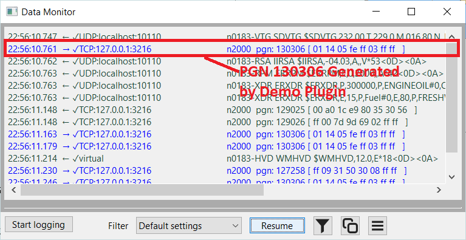
Chapter 9. OCPN Messaging
OpenCPN messaging is a mechanism that allows both OpenCPN to communicate with Plugins and for plugins to communicate with one another. Messages are identified with a message id and the data is usually formatted using Java Script Object Notation (JSON).
Some of the well known OpenCPN Messages include:
GLOBAL_SETTINGS_UPDATED |
OpenCPN Config |
OCPN_CORE_SIGNALK |
OCPN_OPENGL_CONFIG |
WMM_VARIATION_BOAT |
WMM_VARIATION_BOAT_REQUEST |
WMM_WINDOW_SHOWN |
WMM_WINDOW_HIDDEN |
AIS |
OCPN_WPT_ACTIVATED |
OCPN_WPT_DEACTIVATED |
OCPN_WPT_ARRIVED |
OCPN_RTE_ACTIVATED |
OCPN_RTE_DEACTIVATED |
OCPN_RTE_ENDED |
OCPN_RTE_REQUEST |
GRIB_VALUES |
Similar to NMEA 0183, there are two ways to receive and to generate an OpenCPN message; the old mechanism using a Callback API SetPluginMessage to receive messages and the API SendPluginMessage transmit a message. The second mechanism uses the Observer/Listener model where plugin register to receive specific message id’s and use the API WriteCommDriver to send a message.
As messages in general are formatted using JSON, plugins can use the included wxJSON library to parse or encode messages.
Using the "old" mechanism to receive messages.
To receive messages, plugins need to implement the SetPluginMessage callback API. The two parameters to the API are the message id and the message body. The plugin must include the value WANTS_PLUGIN_MESSAGING in the return value of the Init function.
In this example we’ll just log the message generated whenever a waypoint is activated. The next chapter about SignalK will provide an example of parsing the JSON data.
void DemoPlugin::SetPluginMessage(wxString& message_id, wxString& message_body) {
if (message_id == "OCPN_WPT_ACTIVATED") {
wxLogMessage("Demo Plugin, Waypoint activated: %s", message_body);
}
}Using the "old" mechanism to transmit messages.
As plugin messages are generally encoded as JSON, this demo will use the bundled wxJSON library to encode the message, which will simple be the calculated true wind angle and true wind speed.
wxJSONValue root;
wxJSONWriter writer;
wxString data;
root["truewind"]["windangle"] = trueWindAngle;
root["truewind"]["windspeed"] = trueWindSpeed;
writer.Write(root, data);To transmit the message, which can potentially be received and consumed by any other plugin, the SendPluginMessage API is invoked.
SendPluginMessage("Demo_Plugin", data);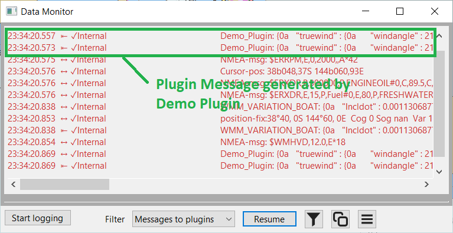
Using the "new" Observer/Listener model to receive Plugin messages.
Using the observer listener model introduced with OpenCPN 5.10, plugins register to receive only the Plugin messages that are of interest. In this example, route activation.
wxDEFINE_EVENT(EVT_OCPN_MSG, ObservedEvt);
PluginMsgId msg_id = PluginMsgId("OCPN_RTE_ACTIVATED");
listener_route = std::move(GetListener(msg_id, EVT_OCPN_MSG, this));
Bind(EVT_OCPN_MSG, [&](ObservedEvt ev) {
HandleMsg_RouteActivated(ev);
});Plugins then handle the received message using the by now familiar boilerplate code used by Observer/Listener message handlers, namely;
void DemoPlugin::HandleMsg_RouteActivated(ObservedEvt ev) {
PluginMsgId msg_id = PluginMsgId("OCPN_RTE_ACTIVATED");
std::string message_body = GetPluginMsgPayload(msg_id, ev);
}Using the bundled wxJSON libraries, plugins may parse the received JSON data. In this example parsing the JSON data that accompanies a Route Activation plugin message.
wxJSONValue root;
wxJSONReader jsonReader;
int errors = jsonReader.Parse(message_body, &root);
if (errors > 0) {
wxLogMessage("Demo Plugin, JSON Error in %s", message_body);
wxArrayString jsonErrors = jsonReader.GetErrors();
for (auto &it : jsonErrors) {
wxLogMessage(it);
}
return;
}
else {
wxString route_name;
wxString guid;
if (root.HasMember("Route_activated")) {
route_name = root["Route_activated"].AsString();
}
if (root.HasMember("GUID")) {
guid = root["GUID"].AsString();
}
// Do something useful with the route name and globally unique id (GUID)
}Using the "new" Observer/Listener model to transmit Plugin messages.
Similar to transmitting NMEA 0183 sentences and NMEA 2000 messages using the observer/listener model, plugins can also send plugin messages using the "new" mechanism.
Plugins retrieve a handle to the "internal" driver using the same method described previously for obtaining handles for NMEA 0183 or NMEA 2000 interfaces.
std::string FindInternalInterface() {
for (const auto& driver : GetActiveDrivers()) {
const auto& attributes = GetAttributes(driver);
auto protocolIterator = attributes.find("protocol");
auto directionIterator = attributes.find("ioDirection");
if (protocolIterator != attributes.end() && directionIterator != attributes.end()) {
// Find a connection matching the required connection and io direction
if ((protocolIterator->second == "internal") && ((directionIterator->second == "OUT") ||
(directionIterator->second == "IN/OUT"))) {
return driver;
}
}
}
return {};
}Having obtained a driver handle, plugins then send the message in a similar way as previously described for sending a NMEA 0183 sentence. The major difference is that the string value must be formatted as follows: message id <SPACE> message data.
For example:
std::string jsonData = "{\"truewind\":{\"windangle\":176.50,\"windspeed\" : 10.34}}";
std::string pluginMessage = "DEMO_MESSAGE_ID " + jsonData; // Note space after message idThe API WriteCommDriver is then used to send the plugin message.
std::vector<uint8_t> payload(pluginMessage.begin(), pluginMessage.end());
auto sharedPointer = std::make_shared<std::vector<uint8_t> >(std::move(payload));
CommDriverResult result = WriteCommDriver(driverHandle, sharedPointer);
if (result != RESULT_COMM_NO_ERROR) {
wxLogMessage("Demo Plugin, Error sending Plugin Message: %d", result);
}Chapter 10. SignalK
There are two mechanism that can be used to receive SignalK data; the "old" method using OpenCPN Plugin Messaging and the "new" method usingthe observer/listener model. Note that connections to SignalK are read only, you cannot send SignalK updates from OpenCPN.
Using OpenCPN Plugin Messaging to receive SignalK data
OpenCPN makes SignalK data available to plugins using Plugin Messaging. It uses the message id "OCPN_CORE_SIGNALK" and the message body contains the SignalK data as JSON formatted text.
Having received a Plugin Message containing a SignalK update, plugins can use the bundled wxJSON libraries to parse the data. As SignalK can store information from multiple vessels, you can use the "self" URN to match with a "context" to only parse SignalK updates that pertain to the vessel associated with the SignalK Server instance.
void DemoPlugin::SetPluginMessage(wxString& message_id, wxString& message_body) {
if (message_id == "OCPN_CORE_SIGNALK") {
wxJSONValue root;
wxJSONReader jsonReader;
jsonReader.Parse(message_body, &root);
// Persist our "self urn
if (root.HasMember("self") && root["self"].IsString() ) {
selfURN = root["self"].AsString();
}
// Only parse updates for our own vessel
if (root.HasMember("context") && root["context"].IsString()) {
wxString context = root["context"].AsString();
if (context == selfURN) {
if (root.HasMember("updates") && root["updates"].IsArray()) {
wxJSONValue updates = root["updates"];
for (int i = 0; i < updates.Size(); i++) {
HandleSKUpdate(updates[i]);
}
}
}
}
}
}The following snippet demonstrates how to obtain the water depth from a SignalK update. Refer to the SignalK Keys Reference to understand the SignalK data paths.
DemoPlugin::HandleSKUpdate(wxJSONValue& update) {
if (update.HasMember("values") && update["values"].IsArray()) {
for (int j = 0; j < update["values"].Size(); j++) {
wxJSONValue& item = update["values"][j];
if (item.HasMember("path") && item.HasMember("value")) {
// In this demo plugin, we're only interested in depth
if (item["path"].AsString() == "environment.depth.belowSurface") {
double waterDepth = item["value"].AsDouble();
// Do something useful with the water depth value, eg shallow water alarm?
wxLogMessage("Demo Plugin, Water Depth: %0.2f", waterDepth);
}
}
}
}
}Receiving SignalK data using Observer/Listener model
To use the observer/listener model to receive SignalK data, plugins register a subscription for SignalK.
wxDEFINE_EVENT(EVT_SIGNALK, ObservedEvt);
SignalkId id_signalk = SignalkId("self");
listener_signalk = std::move(GetListener(id_signalk, EVT_SIGNALK, this));
Bind(EVT_SIGNALK, [&](ObservedEvt ev) {
HandleSignalK(ev);
});And implement the handler. The payload returned to the handler by the OpenCPN SignalK event is JSON text, with a JSON value "ErrorCount" indicating if there are any JSON parsing errors, a value "ContextSelf" containing the "self" URN and another JSON value "data" containing the raw SignalK data. Plugins can then parse the SignalK values using the same mechanism as described previously.
void DemoPlugin::HandleSignalK(ObservedEvt ev) {
auto payload = GetSignalkPayload(ev);
const auto signalKMessage = *std::static_pointer_cast<const wxJSONValue>(payload);
auto errorCount = signalKMessage.ItemAt("ErrorCount");
if (errorCount.AsInt() > 0) {
wxLogMessage("Demo Plugin, SignalK Error Count: %d", errorCount.AsInt());
return;
}
wxJSONValue self = signalKMessage.ItemAt("ContextSelf");
wxJSONValue root = signalKMessage.ItemAt("Data");
// Check if the context matches our "self" URN
if (root.HasMember("context") && root["context"].IsString()) {
wxString context = root["context"].AsString();
if (context == self.AsString()) {
// Parse the data
if (root.HasMember("updates") && root["updates"].IsArray()) {
wxJSONValue updates = root["updates"];
for (int i = 0; i < updates.Size(); i++) {
HandleSKUpdate(updates[i]);
}
}
}
}
}Chapter 11. Routes & Waypoints
OpenCPN provides a rich set of API’s for retrieving, creating, deleting and modifying routes, waypoints and tracks. Routes, waypoints and tracks are all identified using a Globally Unique Identifier (GUID) and this serves as the mechanism for all operations.
Retrieving Waypoints
For example to retrieve all of the waypoints the following API returns an array of GUID’s that can then be used to retrieve the details for each waypoint.
wxArrayString waypointGuids = GetWaypointGUIDArray();
wxString result = "Name, Latitude, Longitude";
PlugIn_Waypoint waypointDetails;
for (const auto& waypointGuid : waypointGuids) {
GetSingleWaypoint(waypointGuid, &waypointDetails);
result.append(wxString::Format("\n%s %0.2f %0.2f", waypointDetails.m_MarkName,
waypointDetails.m_lat, waypointDetails.m_lon));
}
wxMessageBox(result, "Waypoints");There are additional API’s that return a waypoint GUID, for example the plugin message OCPN_WAYPOINT_ACTIVATED which is generated when a waypoint is activated, contains the GUID of the selected waypoint. Alternatively the GetActiveWaypointGUID() also returns a valid GUID if a waypoint is active or an empty string if OpenCPN is not navigating to a waypoint.
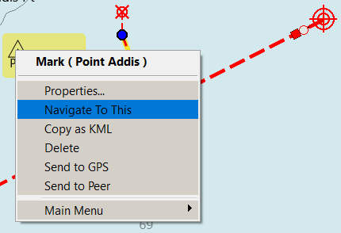
Over time, to meet the needs for additional navigation or display requirments, additional fields were added to a waypoint. Support for these is implemented with additional structures and corresponding API’s.
bool GetSingleWaypoint(wxString GUID, PlugIn_Waypoint *pwaypoint);
bool GetSingleWaypointEx(wxString GUID, PlugIn_Waypoint_Ex *pwaypoint);
bool GetSingleWaypointExV2(wxString GUID, PlugIn_Waypoint_ExV2 *pwaypoint);Retrieving Routes
Similar to waypoints, the following API returns an array of route GUID’s that can then be used to retrieve the details of each route.
wxArrayString routeGuids = GetRouteGUIDArray();
wxString result = "Name, From, To, No. of Waypoints";
for (const auto& routeGuid : routeGuids) {
auto routeDetails = GetRoute_Plugin(routeGuid);
result.append(wxString::Format("\n%s %s %s %s %d", routeDetails->m_NameString,
routeDetails->m_StartString, routeDetails->m_EndString,
routeDetails->pWaypointList->size()));
}
wxMessageBox(result, "Routes");Also, a route’s GUID can be returned through the plugin messaging OCPN_RTE_ACTIVATED or the API GetActiveRouteGUID.
To retrieve the waypoints that constitute a route, plugins iterate the list of waypoints included in the route’s properties.
auto routeDetails = GetRoute_Plugin(guid);
auto waypointList = routeDetails->pWaypointList;
wxString result;
for (Plugin_WaypointList::iterator it = waypointList->begin(); it != waypointList->end(); ++it) {
auto waypoint = *it;
result.append(wxString::Format("\n%s %0.2f %0.2f", waypoint->m_MarkName,
waypoint->m_lat, waypoint->m_lon));
}
wxMessageBox(result, "Route " + routeDetails->m_NameString + " from " + routeDetails->m_StartString);Again, similar to waypoints, additional API’s and structures have been added to routes as requirements have evolved over time.
std::unique_ptr<PlugIn_Route> GetRoute_Plugin(const wxString &GUID);
std::unique_ptr<PlugIn_Route_Ex> GetRouteEx_Plugin(const wxString &GUID);
std::unique_ptr<PlugIn_Route_ExV2> GetRouteExV2_Plugin(const wxString &GUID);Creating a waypoint
Plugins may create waypoints by adding values for the required fields and calling the appropriate API depending on the requirements.
AddSingleWaypoint(PlugIn_Waypoint *pwaypoint, bool b_permanent = true);
AddSingleWaypointEx(PlugIn_Waypoint_Ex *pwaypoint, bool b_permanent = true);
bool AddSingleWaypointExV2(PlugIn_Waypoint_ExV2 *pwaypoint, bool b_permanent = true);For example,
PlugIn_Waypoint waypoint;
waypoint.m_IsVisible = true;
waypoint.m_MarkName = "Demo";
waypoint.m_IconName = "Marks-Race-Start";
waypoint.m_GUID = GetNewGUID();
waypoint.m_lat = currentLatitude;
waypoint.m_lon = currentLongitude;
AddSingleWaypoint(&waypoint, true);Note, the list of icons can be retrieved using the following API:
wxArrayString iconNames = GetIconNameArray();
for (auto it : iconNames) {
// Do something with the icon names, perhaps populate a UI wxChoice widget
}The icons, which are Scalable Vector Graphics (SVG) images, can be found in the uidata\markicons folder in the the opencpn program folder.
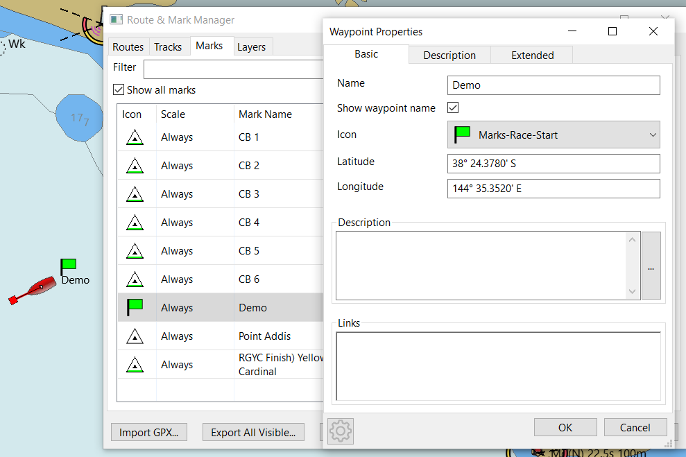
Updating a Waypoint
To update an existing waypoint, retrieve the waypoint, update the appropriate fields and call the corresponding API.
bool UpdateSingleWaypoint(PlugIn_Waypoint *pwaypoint);
bool UpdateSingleWaypointEx(PlugIn_Waypoint_Ex *pwaypoint);
bool UpdateSingleWaypointExV2(PlugIn_Waypoint_ExV2 *pwaypoint);For example to add two range rings, at a distance of 1 Nm with a colour of purple, we can use the following example:
PlugIn_Waypoint_ExV2 waypoint;
GetSingleWaypointExV2(waypointGUID, &waypoint);
waypoint.nrange_rings = 2;
waypoint.RangeRingSpace = 1.0;
waypoint.RangeRingColor = wxColour(128, 0, 128);
if (UpdateSingleWaypointExV2(&waypoint)) {
return;
}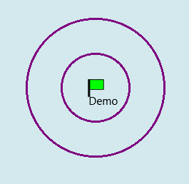
Adding Routes.
Adding a route involves three steps, initializing the route itself, adding waypoints in the correct order and finally adding the route. Depending on the visibility and navigational requirements, different structures with additional fields and corresponsing API’s are used.
std::unique_ptr route = std::make_unique<PlugIn_Route>();
route->m_NameString = "Demo Route";
route->m_StartString = "Here";
route->m_EndString = "There";
route->m_GUID = GetNewGUID();The second step is adding the waypoints.
PlugIn_Waypoint* waypoint = new PlugIn_Waypoint();
waypoint->m_MarkName = "First Waypoint";
waypoint->m_IconName = "Symbol-Triangle";
waypoint->m_GUID = GetNewGUID();
waypoint->m_lat = -38.4;
waypoint->m_lon = 144.6;
route->pWaypointList->Append(waypoint);Finally the route is added.
AddPlugInRoute(route.get(), true);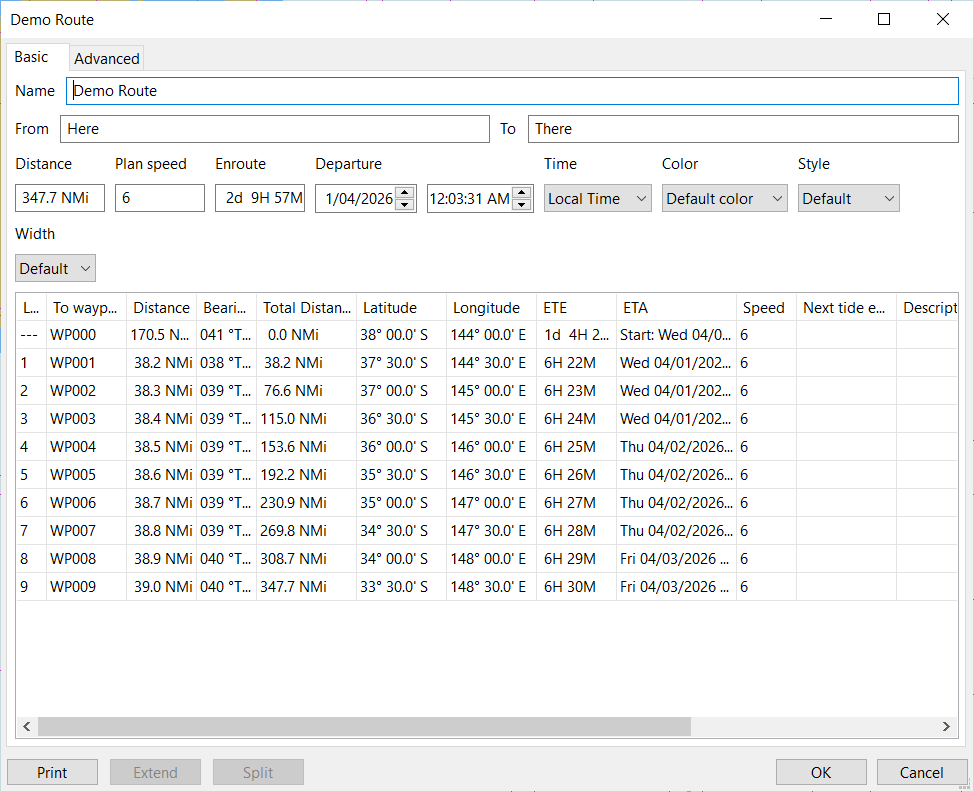
Updating a Route
Similar to updating a waypoint, to update a route, retrieve the selected route, update its properties as required, including the waypoint list and save the changes.
route = GetRoute_Plugin(someGuid);
Plugin_WaypointList* pList = route->pWaypointList;
// In this example we'll reverse the route
std::vector<PlugIn_Waypoint> waypoints;
for (auto it = pList->begin(); it != pList->end(); ++it) {
waypoints.push_back(**it);
}
// Reverse the Start and End names
wxString endString = route->m_EndString;
route->m_EndString = route->m_StartString;
route->m_StartString = endString;
// Clear the waypoint list and reverse the order of waypoints
route->pWaypointList->Clear();
for (auto it = waypoints.rbegin(); it != waypoints.rend(); ++it) {
route->pWaypointList->Append(new PlugIn_Waypoint(*it));
}
UpdatePlugInRoute(route.get());Again, depending on visibility or navigational requirements, use the appropriate classes and corresponding API’s
bool UpdatePlugInRoute(PlugIn_Route *proute)
bool UpdatePlugInRouteEx(PlugIn_Route_Ex *proute)
bool UpdatePlugInRouteExV2(PlugIn_Route_ExV2 *proute)Important Note regarding waypoints and routes
Be aware that there are two types of waypoints. (Please don’t ask what the OpenCPN developers were thinking!)
Standalone (or Free Standing) waypoints. These are created when waypoints are dropped onto the chart, created from the Route and Mark Manager, imported from a GPX file as waypoints <wpt> </wpt> or programmatically as described above, using AddSingleWaypoint etc. These waypoints appear in the Route and Mark Manager under the Marks tab. These waypoints can also be used in routes.
The other type of waypoints are only part of a route and are created when routes are drawn onto the chart, imported from a GPX file as route points <rtept> </rtept> or programmatically as described above using AddPlugInRoute.
When creating a route and wishing to use standalone waypoints there are two options. If the waypoint already exists, obtain a pointer to the existing waypoint and add it to the route list.
PlugIn_Waypoint* waypoint;
GetSingleWaypoint(someGuid, waypoint);
route->pWaypointList->Append(waypoint);If the waypoint does not exist, simply create it on the fly and add it to the route list.
PlugIn_Waypoint* waypoint = new PlugIn_Waypoint();
waypoint->m_MarkName = "First Waypoint";
waypoint->m_IconName = "Symbol-Triangle";
waypoint->m_GUID = GetNewGUID();
waypoint->m_lat = -38.4;
waypoint->m_lon = 144.6;
AddSingleRoute(waypoint);
route->pWaypointList->Append(waypoint);There is no mechanism in the UI to convert waypoints from one form to another.
Chapter 12. Drawing on Canvas (non OpenGL)
OpenCPN allows plugins to draw on the canvas to supplement information that is ordinariliy drawn on the chart. As OpenCPN has evolved over time, supporting single and dual canvas layouts and graphics acceleration using OpenGL so too have the plugin API’s. For simplicity sake this demo will concentrate on the multi canvas rendering API’s for both OpenGL and non OpenGL.
Note that WANTS_OVERLAY_CALLBACK must be returned in the Init function for OpenCPN to register the plugin’s callback routine.
To draw on the canvas when OpenCPN has been launched without OpenGL support, the plugin may use the following Callback API:
RenderOverlayMultiCanvas(wxDC& dc, PlugIn_ViewPort* vp, int canvasIndex, int priority);The rendering API’s that were available for earlier versions of OpenCPN will draw on both canvases if OpenCPN is configured in multi-canvas mode, whereas the newer API’s allow plugins to select which canvas upon which to render.
// Only display on the first canvas
if (canvasIndex != 0) {
... draw stuff
...
}Plugins can select which layer on which to render, meaning that they can draw below all OpenCPN drawn object (OVERLAY_LEGACY), above ships (OVERLAY_OVER_SHIPS) or for important information, over all UI elements (OVERLAY_OVER_UI)
if (priority == OVERLAY_LEGACY) {
... draw information of low importance
...
}
if (priority == OVERLAY_OVER_UI) {
... draw highly important information
...
}The OpenCPN view port (VP) provides the plugin with the chart extents, scale factors etc. to allow the plugin to accurately position any drawing on screen.
The helper function GetCanvasPixLL allows the plugin to convert geographic co-ordimates (latitude & longitude) to screen pixels. The reverse, converting pixels to geographic co-ordinates is performed with the GetCanvasLLPix function.
// Convert the current position to pixel co-ordinates
wxPoint boat, ring;
GetCanvasPixLL(vp, &boat, currentLatitude, currentLongitude);Using the wxWidgets Device Context (DC) provides a plugin with ability to use any of the wxWidgets drawing API’s.
dc.SetPen(*wxRED_PEN);
dc.SetBrush(*wxRED_BRUSH);
dc.DrawCircle(boat.x, boat.y, radius);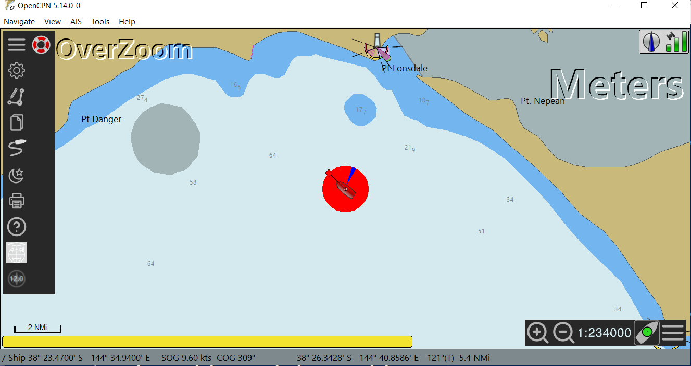
Instead of using the wxWidgets Device Context (wxDC) to render on the canvas, plugins may opt to use a Graphics Context (wxGC) as it provides a richer set of graphics functions. For example anti-aliased drawing, transparency (alpha blending), rotation and more complex transformations.
wxMemoryDC* memDC = wxDynamicCast(&dc, wxMemoryDC);
std::unique_ptr<wxGraphicsContext> gc(wxGraphicsContext::Create(*memDC));
auto path = gc->CreatePath();For example, plugins can create transparent brushes so that other chart objects can be "seen through" objects drawn by the plugin. Below, the fourth parameter of SetBrush is the alpha channel and defines the level of transparency.
---
gc->SetBrush(wxColour(100, 100, 100, 50));
path.AddCircle(boat.x, boat.y, radius);
gc->FillPath(path);
---There are also opportunities to simplify the code by using the translation, rotation and transform functions available with the wxWidgets Graphics Context. For example in this demo plugin, instead of calculating the positions of the wind arrow using trigonometric functions, it can be simplified to the following which has the benefit of reducing the risk of programming errors and reducing the burden of code maintainance.
// Define our arrow's dimensions, tip, bottom right, bottom left
wxPoint2DDouble arrow[] = {
{0.0, 0.0},
{static_cast<double>(radius), 10.0},
{static_cast<double>(radius), -10.0}
};
gc->PushState();
gc->Translate(boat.x, boat.y);
gc->Rotate(angle);
gc->SetPen(wxPen(wxColour(255, 153, 51), 1));
gc->DrawLines(std::size(arrow), arrow);
gc->PopState();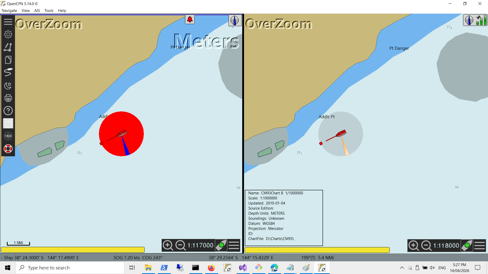
Chapter 13. Drawing on Canvas (OpenGL)
Most modern computers incorporate Graphics Processors (GPU) to improve the performance of graphics intensive applications. GPU’s offload graphics operations onto specialised hardware reducing the load on the CPU. Modern operating systems provide their own API’s to support graphics hardware acceleration such as DirectX on Windows, Metal on OSX and Vulkan on Linux.
There are also cross platform graphics API’s such as OpenGL which is supported on most major platforms. In the case of OpenCPN, OpenGL support is provided by wxWidgets.
Note, while Vulkan is an Open Source, Cross Platform Graphics library and the above is a bit of a generalization, at the moment OpenCPN relies on OpenGL to improve its graphics performance.
To support OpenGL, plugins must specify the compiler flag -DocpnUSE_GL. This may be added in Plugin.cmake if using the ShipDriver template or in PluginConfigure.cmake if using the TestPlugin template.
In addition the bundled library plugindc should be included as it provides classes and functions that simplify drawing on the canvas using either OpenGL (wxGLCanvas) or non-OpenGL (wxDC).
add_subdirectory(opencpn-libs/plugin_dc)
target_link_libraries(${PACKAGE_NAME} ocpn::plugin-dc)Essentially it provides a level of abstraction so the plugin developers can use API’s with the same signature as the wxWidgets Device Context API’s for both wxGLCanvas or wxDC. For example it simplifies rendering with OpenGL by allowing the plugin developer to use:
DrawRectangle(x, y, width, height);insead of the low level complex wxGLCanvas API’s
glBegin(GL_QUADS);
glVertex2i(x, y);
glVertex2i(x + width, y);
glVertex2i(x + width, y + height);
glVertex2i(x, y + height);
glEnd();The plugin must specify the flag WANTS_OPENGL_OVERLAY_CALLBACK in the Init function to register the plugin’s callback function.
Similar to drawing on the Canvas when not using OpenGL, plugins need to determine the canvas layer upon which they weish to draw and if in multi-canvas mode, which canvas to draw upon.
RenderGLOverlayMultiCanvas(wxGLContext* pcontext, PlugIn_ViewPort* vp,
int canvasIndex, int priority) {
// Determine which layer to draw upon
if (priority != OVERLAY_OVER_EMBOSS) {
return false;
}
// Do we have a valid device context
if (!pcontext->IsOK()) {
return false;
}
// Only draw on the first canvas
if (canvasIndex != 0) {
return false;
}Plugins can then draw on the canvas using the plugindc class and its methods as needed.
// Create an instance of plugindc
std::unique_ptr<piDC> pluginDC = std::make_unique<piDC>(pcontext);
// Draw a label at x=100, y =100
wxFont textFont = wxFont(wxFontInfo(16).Family(wxFONTFAMILY_SWISS));
pluginDC->SetFont(textFont);
wxCoord textWidth, textHeight;
wxString label = "My label here";
pluginDC->GetTextExtent(label, &textWidth, &textHeight);
pluginDC->DrawText(label, 100 - (textWidth / 2), 100);Chapter 14. Interacting with the canvas
Oops, nearly forgot this important part. Having drawn on the canvas, users may want actually to interact with it!
Firstly, getting information on where the cursor is located on-screen is obtained by the callback API SetCursorLatLon which is registered by returning the value WANTS_CURSOR_LATLON in the Init function.
void DemoPlugin::SetCursorLatLon(double lat, double lon) {
// Do something with the latitude and longitude
// Eg. determine if the cursor is positioned on something we've drawn on screen.
}The previously mentioned API’s; GetCanvasLLPix and GetCanvasPixLL are used to convert screen co-ordinates (pixels) to geographic co-ordinates and vice versa.
To handle mouse interactions, plugins use another callback API, MouseEventHook which is registered by returning WANTS_MOUSE_EVENTS to the Init function.
bool DemoPlugin::MouseEventHook(wxMouseEvent& event) {
// Only interested in left double click
if (event.LeftDClick()) {
// Convert the screen co-ordinates for the click event to geographic co-ordinates
double latitude, longitude;
GetCanvasLLPix(&viewPort, event.GetPosition(), &latitude, &longitude);
// Do something with the click event
}
return false;
}Note the importance of the return value. Returning false allows the mouse event to be propagated for further processing while returning true will end further propagation.
Similarly for keyboard handling, plugins can use the callback API, KeyboardEventHook which is registered by returning WANTS_KEYBOARD_EVENTS to the Init function.
This is the mechanism that plugins may use to implement Shortcut keys to their specific functions. Again the return value determines whether the key event is propagated.
bool DemoPlugin::KeyboardEventHook(wxKeyEvent& event) {
if (event.GetKeyCode() == WXK_CONTROL_D) {
wxMessageBox(wxString::Format("Pressed Control-D"), "Demo Plugin");
}
return false;
}Chapter 15. wxWidgets Advanced User Interface
wxWidgets Advance User Interface (wxAUI) allows plugins to implement a rich user interface allowing multiple elements to be displayed, floated, docked and have their state to be maintained by.OpenCPN. wxAUI offers a richer set of display options than compared to using modal or non-modal dialogs or plugin launched windows, frames or forms.
Plugins need to retrieve the wxAUI Manager from OpenCPN to register, update and display their UI elements with the AUIManager a reference which is obtained through the API GetFrameAuiManager. Plugins also need to register for callbck API’s by returning the value USES_AUI_MANAGER in the Init function.
Plugins then initialize the wxPaneInfo class and update the AUI Manager. In this demo the AUI managed window is a simple dashboard.
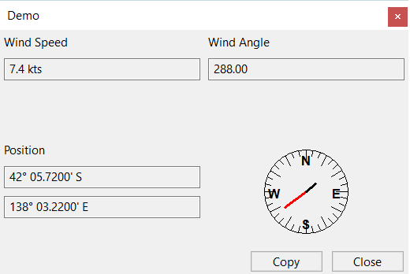
demoDash = std::make_unique<DemoDashboard>(GetOCPNCanvasWindow());
// Add the demo dashboard to the AUI Manager
wxAuiPaneInfo paneInfo;
paneInfo.Name(PLUGIN_API_NAME);
paneInfo.Caption(PLUGIN_API_NAME).CaptionVisible(true);
paneInfo.MinimizeButton(true);
paneInfo.CloseButton(true);
paneInfo.GripperTop(true);
paneInfo.Float();
paneInfo.MinSize(demoDash->GetMinSize());
paneInfo.Show(isToolbarActive);
auiManager->AddPane(demoDash.get(), paneInfo);
auiManager->Update();
auiManager->Bind(wxEVT_AUI_PANE_CLOSE, &DemoPlugin::OnPaneClose, this);In this example, the display of the dashboard is toggled using the OpenCPN toolbar which was previously described in Chapter 5.
if (id == demoToolbarId) {
// Toggle the display of the wxAUI Demo
isToolbarActive = !isToolbarActive;
auiManager->GetPane(PLUGIN_API_NAME).Show(isToolbarActive);
auiManager->Update();
SetToolbarItemState(id, isToolbarActive);
}Note that as the demo dashboard display is shown or hidden, the toolbar button state is also changed.
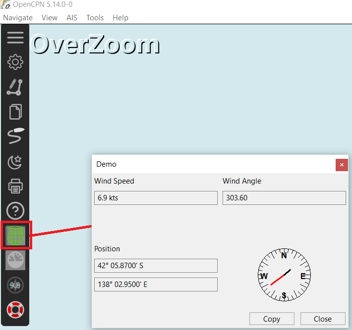
During the initialization of the AUI Manager the plugin registered for the AUI_PANE_CLOSE event. Upon receiving these events, the plugin may also determine whether the AUI managed window is shown or hidden and synchronise any other state as required, in this case the toolbar button state.
void DemoPlugin::OnPaneClose(wxAuiManagerEvent& event) {
if (event.GetPane()->name == PLUGIN_API_NAME) {
isToolbarActive = false;
SetToolbarItemState(demoToolbarId, isToolbarActive);
}
else {
event.Skip();
}
}Another benefit of wxAUI is that OpenCPN saves the state of any AUI managed windows. When OpenCPN starts it will restore the state, simplifying the "plumbing" for plugin developers. The callback API UpdateAUIStatus can be implemented by plugins to detect when the wxAUI status has changed, providing plugins the opportunity to synchronise any associated state, such as in this demo the toolbar button state.
void DemoPlugin::UpdateAuiStatus(void) {
if (auiManager->GetPane(PLUGIN_API_NAME).IsOk()) {
isToolbarActive = auiManager->GetPane(PLUGIN_API_NAME).IsShown();
SetToolbarItemState(demoToolbarId, isToolbarActive);
}Also worth noting some of other API’s not necessarily required for AUI managed windows but important nonetheless.
When the user changes the colour scheme for OpenCPN (day, dusk, night), plugins receive a notification from the callback API SetColorScheme. This allows plugins to respond to user changes of the colour schema, perhaps by changing the colours of their UI elements, or for plugns that interact with switching systems, turn on/off lights, send commands over a network to change instrument displays or MFD’s.
void DemoPlugin::SetColorScheme(PI_ColorScheme cs) {
if ((cs == PI_GLOBAL_COLOR_SCHEME_DUSK) || (cs == PI_GLOBAL_COLOR_SCHEME_NIGHT)) {
demoDash->SetNightMode(true);
}
else {
demoDash->SetNightMode(false);
}
}To apply OpenCPN colour schemes to plugin UI elements, the OpenCPN API DimeWindow will apply the configured colour scheme to the plugin. For example in the Demo Dashboard when the colour scheme is changed, it applies the background colour to all of its child controls. (It does however apply its own colours to the foreground)
DimeWindow(this);
wxColour background = GetBackgroundColour();
wxWindowList& children = this->GetChildren();
for (wxWindowList::iterator it = children.begin(); it != children.end(); ++it) {
wxWindow* child = *it;
child->SetBackgroundColour(background);
child->SetForegroundColour(mode ? *wxWHITE : *wxBLACK);
}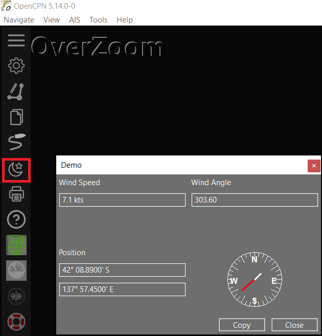
For further information about wxAUI, you should refer to the wxWidgets official documentation.